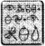

4 NUMARALI GÖZALTI HÜCRESİ, POLİS PLAZA, HAVEN ŞEHRİ, YERALTI BİRİMİ
ARTEMİS LEP’in sorgulama odasında uyandı. Dünyanın herhangi bir polis soruşturma odasında olabilirdi. Burada da aynı rahatsız mobilyalar, aynı modası geçmiş çalışma yöntemi vardı.
Root bir anda konuya girdi. “Pekala, Fowl, öt bakalım.”
Artemis kafasını toparlamak için bir süre durdu. Holly ve Root karşısında, üzeri plastikten, alçak bir masada oturmuşlardı. Yüksek mumlu bir ampul tam yüzüne doğru çevrilmişti.
“Olamaz, Yarbay. Hepsi bu mu? Daha fazlasını ummuştum.”
“Ah, daha fazlası var. Ama senin gibi suçlular için değil.”
Artemis ellerinin sandalyeye zincirlenmiş olduğunu fark etti.
“Umarım, geçen yıl olanlarla ilgili kızgın değilsinizdir, hâlâ? Ne de olsa, ben kazandım. Yani Kitabınıza göre, öyle olmuş olması gerekiyor.”
Root purosunun ucu Artemis’in burnuna girinceye kadar öne eğildi. “Bu tamamen farklı bir olay, Çamur Çocuk. Bu yüzden masum rolü oynamaya kalkışma.” Artemis telaşlanmamıştı. “Sen hangisisin? İyi Polis mi, Kötü Polis mi?”
Root kahkahalarla gülerken purosunun ucu havada şekiller çizdi. “İyi Polis, Kötü Polis! Sana bunu söylemek istemezdim, Dorothy ama artık Kansas’ta değilsin.” Yarbay Oz Büyücüsü’nden alıntı yapmaya bayılırdı. Kuzenlerinden üçü o filmde oynamışlardı.
Gölgelerin arasından bir görüntü belirdi. Bir kuyruğu, dört bacağı, iki kolu vardı ve elinde bir çift lavabo pompasını andıran bir şeyler tutuyordu.
“Pekala, Çamur Çocuk” dedi görüntü. “Gevşemeye çalışırsan, canın fazla yanmaz.”
Foaly emme vantuzlarını Artemis’in gözlerine taktı ve oğlan hemencecik kendinden geçti.
“Lastik contaların içinde yatıştırıcı ilaç var” diye açıkladı sentor. “Gözeneklerden içeri sızıyor. Asla hissedilmezler. Kolaysa evrenin en zeki yaratığı olduğum gerçeğini kabul etmeyin.”
“Şey, bilmiyorum,” dedi Root, masumca. “Bu Koboi denilen pixie’nin zehir gibi bir zekâsı var.”
Foaly toynağını öfkeyle yere vurdu. “Koboi mi? Koboi mi? Onun şu kanatları resmen gülünç. Bana soracak olursanız, bu günlerde Koboi teknolojisinden çok fazla yararlanıyoruz. LEP’in tüm işini tek bir şirkete vermek pek akıllıca bir şey değil.”
“Senin şirketinin dışında, tabii ki.”
Ben ciddiyim, Julius. Opal Koboi’yi üniversite yıllarından tanırım. Pek dengeli biri değildir. Tüm yeni Neutrino’larda Koboi çipleri var. Bu laboratuarlar iflas edecek olursa, Polis Plaza’da DNA toplarından ve birkaç kasa dolusu elektronik şok silahından başka bir şey kalmaz.”
Root burnundan soludu. Koboi silahlı kuvvetlerdeki her türlü ateşli silah ve aracın performansını arttırdı. Güçlerini üç kat yükseltip ısı yayma oranlarını yarıya indirdi. Sonuçlar senin laboratuarının geçen yılki istatistiksel sonuçlarından daha iyi, Foaly.”
Foaly bir çift optik-lifli kabloyu yeniden bilgisayara bağladı.
“Evet, şey, Konsey bana yeterli bir bütçe verseydi...” Sızlanmayı bırak, Foaly. Bu makine için uygun görülen bütçeyi gördüm. Tıkanmış lağımları açmaktan başka işlere de yarasa, iyi olur.”
“Bu bir Retimager, bu bebekle özel olarak ilgilenmeyi düşünüyorum.”
“Peki, bu bebek tam olarak neye yarıyor?”
Foaly hücre duvardaki plazma ekranı çalıştırdı.
“Bu koyu renkli daireleri görüyor musunuz? Bunlar insan retinaları. Her görüntü tıpkı bir fotoğrafın negatifi gibi küçük izler bırakır. Bilgisayara istediğimiz resmi yükleyip eşleştirme yapabiliriz.”
Root un hayranlıktan bayıldığı söylenemezdi. “Yararlı bir şey.”
“Evet, gerçekten de yararlı. İzle.”
Foaly bir goblinin fotoğrafını indirip Retimager’in veritabanındaki fotoğraflarla karşılaştırdı.
“Eşleşen her nokta için bir vuruş elde ediyoruz. Yaklaşık iki yüz vuruş normal sayılıyor. Başın genel biçimi, yüz hatları ve saire. Vuruşlarda kayda değer bir artış varsa, Artemis bu goblini daha önce görmüş demektir.” Ekranda yüz seksen altı sayısı yanıp sönmeye başladı. “Goblin konusu olumsuz. Bir de Yumuşakburun deneyelim.”
Sayı yine iki yüzün altındaydı.
“Bir olumsuz daha. Affedersin Yüzbaşı ama Fowl masum görünüyor. Ne bir goblin gördü, ne de B’wa Keli ile ticaret yaptı.”
“Hafızasını silmiş olabilirler.”
Foaly vantuzları Artemis’in gözlerinden çıkarttı. “Bu bebeğin en iyi yanı da bu. Hafıza silicileri işe yaramıyor. Retimager gerçek fiziksel kanıtla çalışıyor. Silmek için retinaları kazıman gerekir.”
“İnsanın bilgisayarından bir şey çıktı mı?”
“Bir sürü şey,” diye yanıt verdi Foaly. Ama hiçbir suç unsuru yok. Goblinler ya da pillerle ilgili tek bir not bile yok.”
Root köşeli çenesini kaşıdı. “Peki ya iri yarı olan? O aracı olabilir.”
“Onu da Retimager’den geçirdim bile. Hiçbir şey yok. Kabul et artık, LEP bu kez yanlış Çamur Adamları seçti. Hafızalarını silip onları evlerine gönderin.
Holly başıyla onayladı. Ama Yarbay başını sallamadı.
Bekle bir dakika, düşünüyorum.”
“Ne düşünüyorsunuz?” diye sordu Holly. "Artemis Fowl’un burnunu işimizden ne kadar çabuk çıkartırsak, o kadar iyi olur.”
Belki de olmaz. Hazır bur adalarken...”
Holly’nin şaşkınlıktan ağzı bir karış açıldı. “Yarbay, Fowl u benim kadar yakından tanımıyorsunuz. Ona yarım şans verirseniz, goblinlerden daha büyük bir sorun olacaktır.”
Belki de bu Çamur Adam sorunumuz konusunda bize yardımcı olabilir.”
“İtiraz etmek zorundayım, Yarbay. Bu insanlara güven olmaz.”
Root’un yüzü karanlıkta kor gibi parlayabilirdi. “Bundan hoşlandığımı mı sanıyorsun, Yüzbaşı? Bu Çamur Çocuğa yağ çekme düşüncesi, sence hoşuma mı gidiyor? Hayır. Artemis Fowl’den yardım isteyeceğime, kokuşmuş bir solucanı canlı canlı yemeği yeğlerdim. Ama biri, B’wa Kell’in silahlarına güç kaynağı sağlıyor ve bunun kim olduğunu bulmam gerek. Bu yüzden programa sadık kal, Holly. Bu işten, senin o küçük intikamından daha önemli şeyler kazanabiliriz.”
Holly dilini ısırdı. Yarbaya karşı gelemezdi, özellikle de kendisi için tüm bu yaptıklarından sonra ama durum ne olursa olsun, Artemis Fowl’den yardım istemek yanlış bir hareketti. İnsanın sorunlarına bir çözüm bulacağı konusunda hiç kuşkusu yoktu ama ne pahasına?
Root derin bir iç çekti. “Pekala, Foaly, onu ayılt. Ve ona bir çevirici ayarla. Çamur Adam dilinde konuşmak başımı ağrıtıyor.”
Artemis göz altlarındaki şişmiş deriyi ovuşturdu.
“Vantuzların içinde sakinleştirici vardı demek?” dedi Foaly’ye bakarak. “Mikro-iğneler mi?”
Foaly etkilenmişti. “Bir Çamur Çocuğa göre çok zeki sayılırsın.”
Artemis kulağının üzerine yerleştirilmiş olan ay şeklindeki yumruyu elledi.
“Çevrici mi?”
Foaly başıyla Yarbayı işaret etti. “Farklı dillerde konuşmak bazılarına baş ağrısı veriyor.”
Artemis okul kravatını düzeltti. “Anlıyorum. Şimdi, size nasıl yardımcı olabilirim?”
“Senden yardım istediğimizi de nereden çıkarttın, insan?” diye hırladı Root, purosunun çevresinden.
Oğlan sırıttı. “İçimde bir his var, Yarbay. Benden bir şey istemiyor olsaydınız, yatağımda kendime gelirdim, üstelik de karşılaşmamız hakkında hiçbir şey hatırlamadan.”
Foaly gülümsemesini kıllı eliyle örtmeye çalıştı.
“Bir hücrede uyanmadığın için şanslı sayılırsın, dedi Holly.
“Hâlâ kızgın mısın, Yüzbaşı Short? Eski defterleri kapatsak olmaz mı, artık?”
Holly’nin ters bakışı Artemis’e gereken yanıtı vermişti.
Artemis iç geçirdi. “Pekala. Tahmin edeyim. Yeraltı Birimiyle ticaret yapan insanlar var. Ve Kâhya’nın bu tacirleri izleyip yakalamasını istiyorsunuz. Yaklaştım mı?
Periler bir süre sessiz kaldılar. Bu sözleri bir anda Fowl’un ağzından duymak, onları gerçekle yüzleştirmiş ti.
“Yaklaştın,” diye kabul etti Root. “Pekala, Foaly, Çamur Çocuğu hemen bilgilendir.”
Danışman LEP’in merkez bilgisayarından bir dosya indirdi. Plazma ekranda Ağ Haberleri’nden bir dizi kupür belirdi. Muhabir bir okyanus dalgası büyüklüğünde bir perçemi olan, orta yaşlı bir elfti.
“Haven şehir merkezi,” diye mırıldandı muhabir. “LEP bir kaçakçılık olayım daha ortaya çıkardı. Bu kez söz konusu olan, beş yüz gram altın değerinde olduğu tahmin edilen, Hollywood lazer diskleri. B’wa Keli goblin üçlüsünden kuşkulanılıyor.”
“Gittikçe kötüleşiyor,” dedi sertçe Root.
Artemis gülümsedi. “Bundan daha beteri de mi var?” Muhabir bir kez daha ekranda belirdi. Bu kez, arkasındaki deponun pencerelerinden dalga dalga alevler yükseliyordu. Perçemi biraz yanmıştı sanki.
“Bu gece, B’wa Keli, Doğu Yakasını gizlice ele geçirmek için Koboi Laboratuarları tarafından kullanılan bir depoyu ateşe verdi. Görünen o ki yetenekli pixie üçlüye haraç vermeyi reddetmiş.”
Alevlerin yerini bir başka haber almıştı, bu kez ekranda öfkeli bir kalabalık vardı.
“Bugün Polis Plaza’nın önünde, LEP’in goblinlerle başa çıkamamasını protesto eden halkla, polisler arasında bir tartışma çıktı. Son zamanlarda, çok sayıda köklü şirket B’wa Kell’in haraçları yüzünden iş yerlerini kapatmak zorunda kaldı. Bu durumdan en çok zarar görenlerden biri de yalnızca geçen ay içinde altı kez sabotaja uğrayan, Koboi Laboratuarları oldu.”
Foaly görüntüyü dondurdu. Halk mutlu görünmüyordu.
“Anlaman gereken şey, Fowl, goblinlerin aptal oldukları. Onları aşağıladığımı sanma. Bu bilimsel olarak kanıtlanmış bir gerçek. Beyinleri, bir fareninki kadar.” Artemis başıyla onayladı. “Öyleyse, onları kim örgütlüyor?”
Root purosunu dişlerinin arasında ezdi. “Bilmiyoruz. Ama durum gittikçe kötüleşiyor. B’wa Keli işe ufak tefek suçlarla başladı, oysa şu an polise savaş açmış durumda. Geçen gece yer üstünden yapılacak bir pil teslimatının önünü kestik. Bu piller kullanımı yasaklanmış Yumuşakburun adlı lazer silahlarına güç kaynağı olarak kullanılıyor.” “Yüzbaşı Short da anlaşmanın karşı tarafında bir Çamur Adamın olabileceğinden kuşkulandı.”
“Haksız mıyım yani?” diye mırıldandı Holly.
Artemis, Holly’nin yorumunu duymazdan geldi. “Goblinlerin toptancıları soymadıklarını nereden biliyorsunuz? Ne de olsa bu piller pek koruma altında değildirler.” Foaly kıkırdadı. “Hayır, goblinlerin ne denli aptal olduklarını anladığını sanmıyorum. Sana bir örnek vereyim. B’wa Keli generallerinden biri ve üstelik bu, onların en üst düzey perileri, sahte bir kredi kartıyla alışveriş yapıp alındıya kendi imzasını atmaya çalışırken yakalandı. Hayır, bu işin arkasındaki her kim varsa, anlaşmaların berbat olmaması için bir insana gereksinimi var.” “Yani siz benim bu aracı insanı bulmamı istiyorsunuz,” dedi Artemis. “Ve daha da önemlisi, ne bildiğini öğrenmemi.”
Artemis bir yandan konuşurken, bir yandan da hızla düşünüyordu. Tüm bu olayı kendi yararına kullanabilirdi. Peri Halkının güçleri gangsterlerle pazarlık konusunda, çok değerli bir kozdu. Planın ilk tohumları Artemis’in beyninde filizlenmeye başlamıştı bile.
Root isteksizce başını salladı. “İşte hepsi bu. LEPrecon ajanlarını yer üstüne gönderme tehlikesini göze alamam. Goblinlerin onlara ne tür bir teknoloji pazarladıklarını kim bilebilir ki. Adamlarımın tuzağa düşmelerine neden olabilirim. Sizler birer insan olarak göze batmadan aralarına karışabilirsiniz.”
“Kâhya mı göze batmayacak?” dedi Artemis, gülümseyerek. “Hiç sanmam.”
“En azından dört bacağı, bir de kuyruğu yok,” dedi Foaly.
“Anlaşıldı. Bu dünyada, düzenbaz tüccarınızı yakalayacak biri varsa, o da hiç kuşkusuz Kâhya’dır. Ama...” İşte yine başlıyoruz, diye düşündü Holly. Artemis hiçbir şeyi karşılıksız yapmazdı.
“Ama?” diye üsteledi Root.
“Ama yardım etmemi istiyorsanız bunun karşılığında sizden bir isteğim olacak.”
“Ne gibi bir istek?”
“Rusya’ya gitmem gerek,” diye cevapladı Artemis. “Daha doğrusu Kuzey Kutbu dairesine. Ve bir kurtarma girişimi için yardıma ihtiyacım var.”
Root kaşlarını çatı. “Kuzey Rusya bizim için pek uygun değil. Radyasyon yüzünden kalkanlarımız çalışmıyor.”
“Bunlar benim koşullarım,” dedi Artemis. “Kurtarmayı planladığım kişi babam. Tek bildiğim şey, geç kalmış olduğum. Bu yüzden pazarlık etmeye gerçekten zamanım yok.”
Çamur Çocuk içten davranıyor gibiydi. Holly’nin yüreği bile bir an için yumuşadı. Ama Artemis Fowl’la hiçbir şey belli olmazdı -bu yeni planının parçası olabilirdi. Root hayati bir karar verdi.
“Anlaştık,” dedi elini uzatarak.
El sıkıştılar. Bir peri ve bir insan. Bu tarihi bir andı.
“Pekala,” dedi Root. “Foaly, artık büyük insanı uyandır ve goblin mekiğini çabucak gözden geçir.”
“Ya ben?” diye sordu Holly. “Pis işime geri mi döneyim?”
Root Yarbay olmasaydı hiç kuşkusuz bu sözlere kıkır kıkır gülerdi. “Ah hayır, Yüzbaşı. Sen elimizdeki en iyi mekik pilotusun. Paris’e gidiyorsun.”